Метка «Таблица»
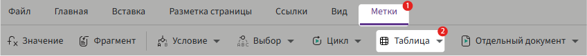
Метка т_цикл (табличный цикл)
Если в анкете есть поле типа «Список», и вы хотите вывести его данные в виде таблицы, используйте метку т_цикл.
Метка автоматически создаёт строки таблицы — по одной на каждую запись списка.
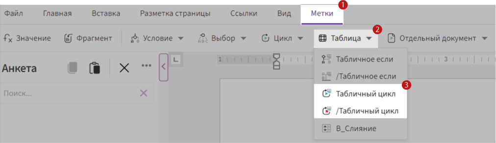
Что такое список
Список — это поле в анкете, в которое можно добавлять несколько однотипных записей.
Например, список сотрудников с полями:
-
ФИО
-
Должность
-
Стаж работы
Что делает т_цикл
т_цикл не «создаёт одну строку» для каждого элемента, а повторяет табличный блок (тело цикла), который вы поместили между метками {т_цикл(...)} и {/т_цикл}.
Вы сами задаёте структуру в режиме редактирования:
- Это может быть одна строка таблицы,
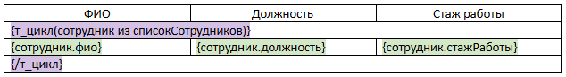
- несколько строк (например, 3 строки на один элемент),
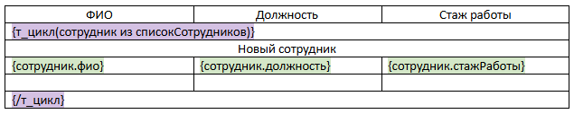
- или целая группа строк с вложенной логикой.
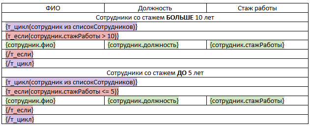
Если внутри цикла есть (т_если), можно заложить несколько разных условий, и для каждого предусмотреть своё количество строк и содержимое.
Важно: т_цикл повторит ровно ту структуру и логику, которую вы заложили в шаблоне.
Если фрагмент содержит формулы, условия или дополнительные метки, они будут выполнены для каждого элемента списка отдельно.
Синтаксис
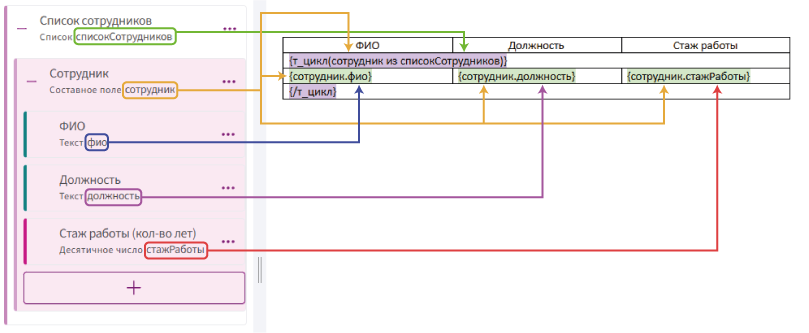
-
т_цикл(сотрудник из списокСотрудников)— начало цикла, проходящего по каждому элементу списка. -
списокСотрудников— идентификатор поля «Список»; -
сотрудник— это имя, через которое происходит обращение к каждому элементу. Вместо него можно использовать любое допустимое имя переменной, например:сотрудник1,_23,_сотрудники т. п.
Соответственно, к полям, находящимся внутри составного поля, нужно обращаться с указанием этого имени. Например, если заменить сотрудник на _1, то обращение к полю фио будет выглядеть так:
_1.фио
-
сотрудник.фио— обращение к полю внутри списка. -
/т_цикл— конец цикла.
⚠️ Важно: Метка т_цикл должна располагаться в отдельной строке таблицы. Любой другой текст или метки в этой строке будут проигнорированы.
Пример использования:
Задача: Создать таблицу сотрудников с указанием ФИО, должности и стажа работы.
Шаги:
-
Создайте поле типа «Список» и назовите его, например,
списокСотрудников. -
Внутри списка добавьте элемент типа «Составное поле», а в нём:
-
текстовое поле для ФИО;
-
текстовое поле для должности;
-
числовое поле (десятичное число) для стажа работы.
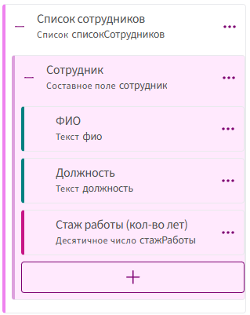
-
-
Вставьте таблицу в тело шаблона:
- Через меню «Вставка» → «Таблица» добавьте таблицу с 3 столбцами и 4 строками.
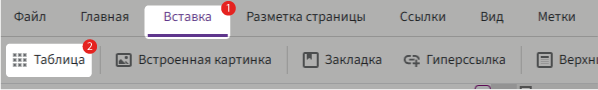
-
В первой строке пропишите заголовки столбцов (ФИО, Должность, Стаж).
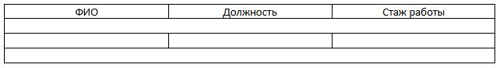
-
Во второй строке таблицы вставьте начало табличного цикла:
-
Переменная: сотрудник (это имя, через которое вы будете обращаться к полям внутри одной записи);
-
Список: списокСотрудников (идентификатор списка из анкеты).
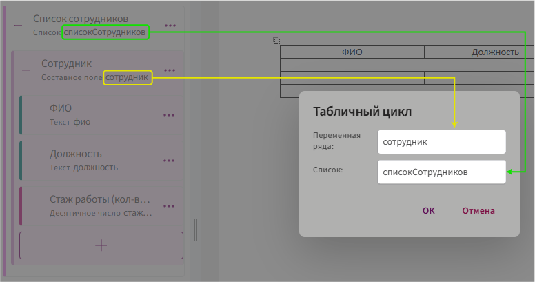
-
-
В четвёртой строке закройте цикл:
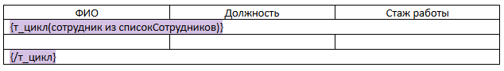
-
В третьей строке таблицы вставьте поля через метку значение:
Метка т_если (табличное если)
Табличное если —— это специальная метка, которая позволяет показывать или скрывать строки таблицы в зависимости от заданного условия.
📌 Работает аналогично обычной метке если, но используется именно внутри таблиц.
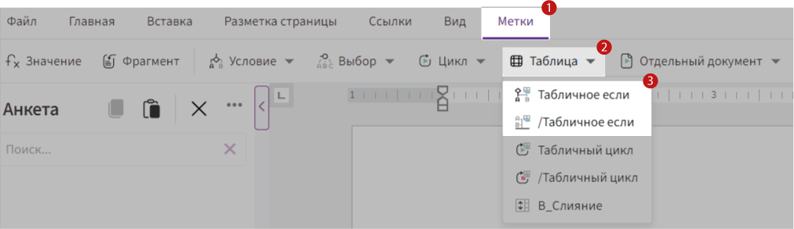
Зачем нужна метка т_если
Иногда необходимо отобразить строки таблицы только при выполнении определённого условия. Например:
-
Показывать сотрудников только если стаж больше 3 лет.
-
Показывать товары только если цена выше 10 000 ₽.
-
Показывать строку только если в анкете отмечена галочка.
Для таких случаев и используется метка т_если.
Как работает
-
Вставьте метку
т_еслив нужную строку таблицы. -
Укажите внутри неё условие.
-
Если условие выполнено — строки отображается. Если нет — строки скрывается.
Основные особенности:
-
Метка работает только внутри таблицы.
-
Управляет отображением всех строк.
-
Условие может опираться на любое поле анкеты.
-
Можно использовать внутри структуры табличного цикла
т_цикл, чтобы фильтровать список.
Синтаксис
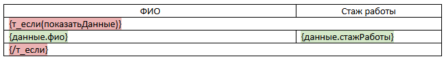
Где:
-
т_если(...)— открывающая метка с условием. -
показатьДанные— поле анкеты типа «Да/Нет» или логическое выражение. -
данные— переменная, указывающая на текущую запись из списка. -
фио,стажРаботы— поля внутри составного поля. -
/т_если— закрывающая метка, завершающая условную конструкцию.
📌 Всё, что находится между {т_если(...)} и {/т_если}, будет выведено только если условие выполнено.
Пример использования табличного цикла и табличного если:
Задача: Вывести в таблицу только тех сотрудников, чей стаж работы больше 3 лет.
Решение с использованием цикла и условия:
-
(т_цикл)для перебора всех сотрудников: Мы будем использовать цикл, чтобы пройти по каждому сотруднику в списке. -
(т_если)для отображения сотрудников с стажем больше 3 лет: Внутри цикла добавим условие, чтобы выводить данные только для тех сотрудников, у которых стаж больше 3 лет.
Шаги:
-
Добавьте таблицу в шаблон:
-
3 столбца, 6 строк.
-
В первой строке — заголовки: ФИО, Стаж работы.
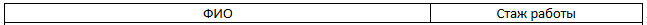
-
-
Добавьте табличный цикл:
-
Объедините ячейки второй строки.
-
Вставьте метку:
-
данные— переменная ряда. -
сотрудники— идентификатор списка.
-
-
Добавьте табличное условие:
-
Объедините ячейки третьей строки.
-
Вставьте табличное если с условием:
данные.стажРаботы > 3.
-
-
Добавьте данные сотрудников:
-
В четвёртую строку вставьте поля: «ФИО» (
{данные.фио}) и «Стаж работы» ({данные.стажРаботы}) через метку «Значение»:
-
-
Закройте метки:
-
В пятой строке, в ячейку первого столбца —
{/т_если}. -
В шестой строке —
{/т_цикл}.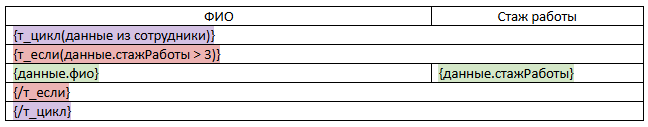
-
Результат:
Только те сотрудники, чей стаж превышает 3 года, будут выведены в таблицу — по одной строке на каждого.
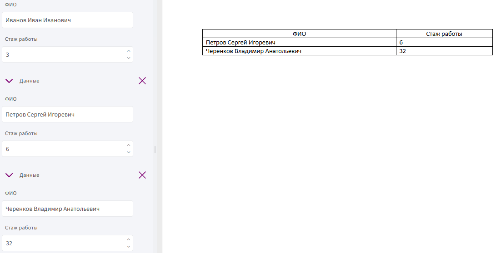
В_Слияние
в_слияние — это табличная метка, которая объединяет ячейки по вертикали, если для них указано одно и то же выражение.
📌 Метка работает только внутри таблиц, может использоваться в любом столбце и даже несколько раз в одном столбце с разными выражениями.
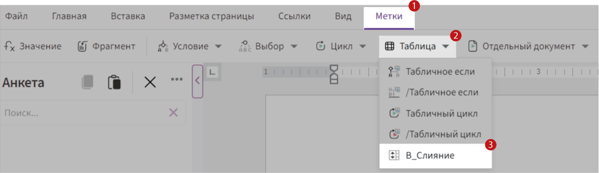
Зачем нужна метка в_слияние
Представьте, что вы выводите список услуг, сгруппированных по категориям. Чтобы не дублировать название категории в каждой строке, можно объединить ячейки в этом столбце. Также можно использовать в_слияние, чтобы визуально сгруппировать одинаковые значения или подчеркнуть логическую структуру таблицы.
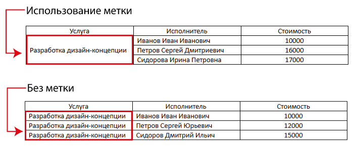
Как работает
Метка в_слияние размещается внутри ячейки таблицы, в том столбце, где нужно выполнить вертикальное объединение. Вы передаёте в неё выражение — это может быть число, переменная или логическое условие.
Во время генерации документа система сравнивает это выражение в соседних строках:
-
Если выражения совпадают — ячейки объединяются.
-
Если значение выражения меняется — начинается новая группа.
📌 В одном и том же столбце можно использовать несколько меток в_слияние с разными выражениями. В этом случае объединение произойдёт только в рамках одной группы.
Синтаксис
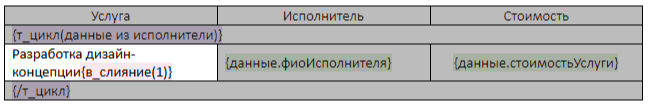
Где 1 — это параметр, определяющий группу для объединения.
Возможны варианты:
-
Константа —
в_слияние(1) -
Все строки с таким выражением объединяются в одну группу.
-
Условие —
в_слияние(данные.стоимостьУслуги > 10000) -
Объединяются те строки, где выполняется условие.
-
Переменная —
в_слияние(данные.тип) -
Ячейки объединяются, если подряд идущие строки имеют одинаковое значение поля.
Пример:
Задача: объединить все строки первого столбца в одну ячейку, независимо от значения
Шаги:
- Создайте поле «Список» с нужными данными и вставьте эти поля в таблицу.
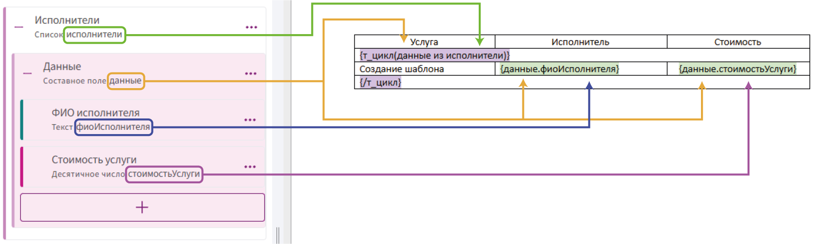
- Внутри табличного цикла в колонке «Услуга» вставьте метку
в_слияниеи передайте в неё значение1.
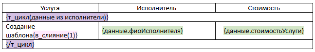